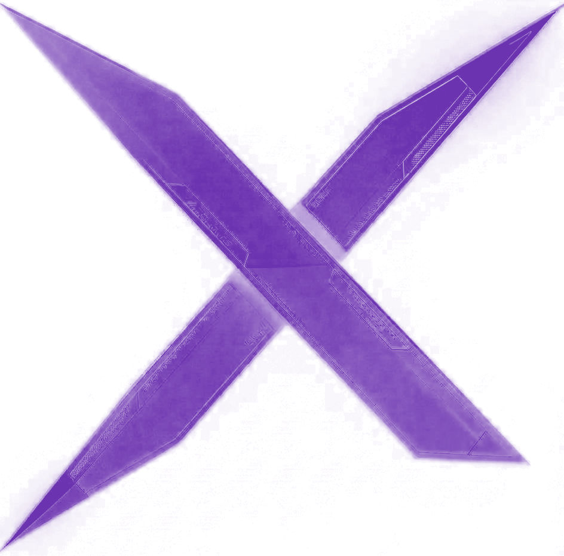
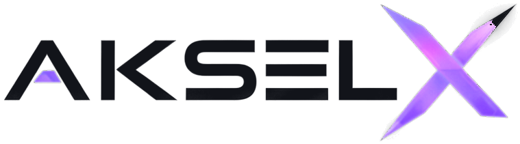
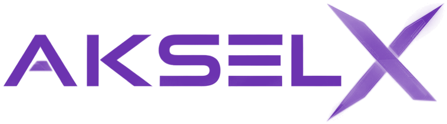

Um eixo entre a precisão da engenharia e a energia da cor. O violeta conduz a marca; o branco e a luz dão clareza ao movimento.
O símbolo sintetiza a marca em duas linhas que se cruzam. É o elemento de assinatura: funciona isolado, em órbitas e em movimento.

Ângulos consistentes que formam um eixo central — sólido, estável e reconhecível em qualquer escala.
Reserva mínima equivalente à largura de um traço ao redor do símbolo, preservando sua leitura.
Favicon, aplicativos, selo, monograma e elemento gráfico de fundo.
A assinatura principal combina o wordmark e o símbolo. Abaixo, as versões cromáticas para fundos claros, coloridos e escuros.


A marca repetida em grade forma um padrão de movimento — ideal para fundos, embalagens e superfícies digitais.
Figura 01 · Mosaico tipográfico — AKSEL X repetido em grade, X em violeta.
A base cromática é construída sobre o violeta da marca, sustentada por branco e cinza-claro, com o escuro profundo como contraponto.
Uma família display de traço geométrico para títulos, acompanhada de uma sans de alta legibilidade e de um mono para dados técnicos.
Tecnologia que se move no eixo certo.